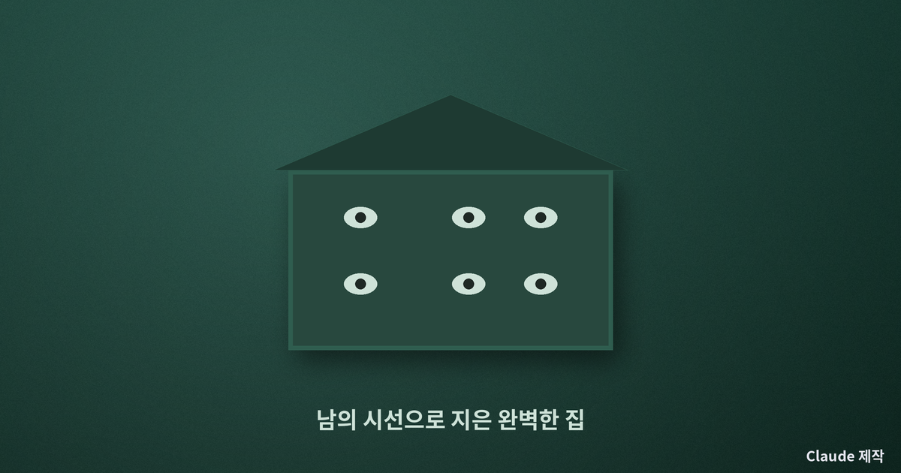
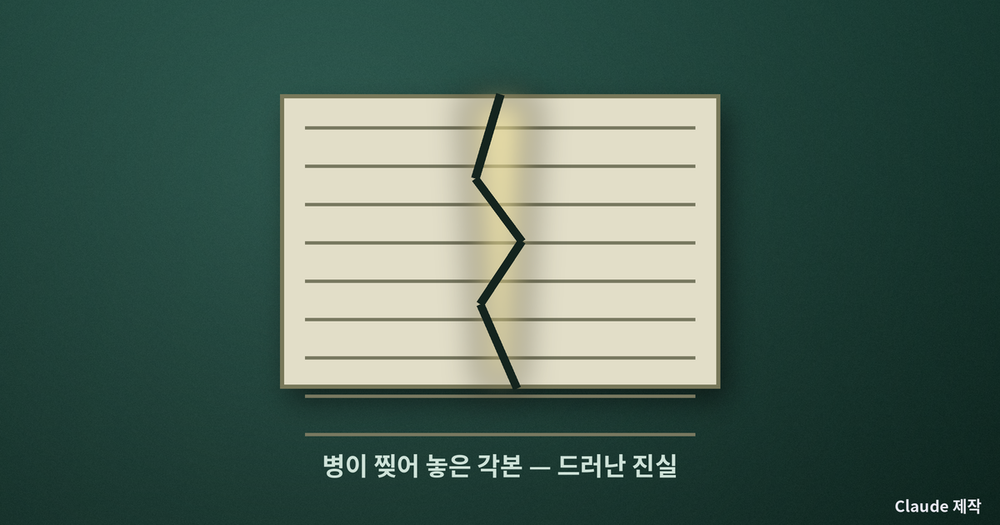
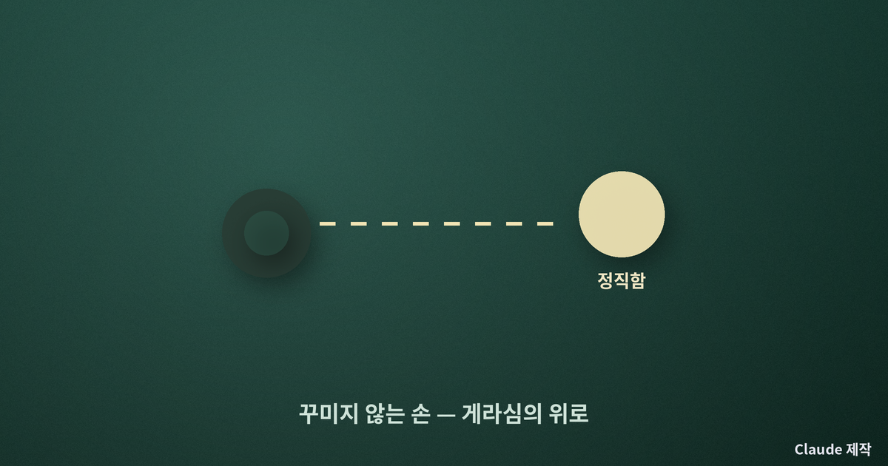
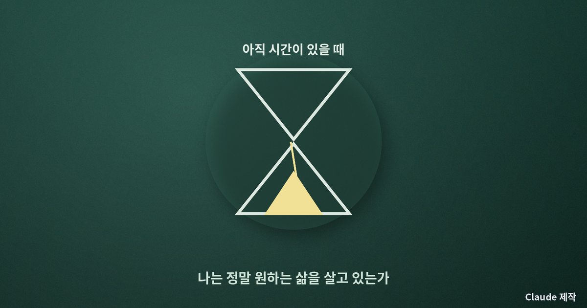

톨스토이 『이반 일리치의 죽음』 — 잘 살았다고 믿었던 삶이 무너지는 순간
가장 평범한 삶, 그래서 가장 무서운 이야기
톨스토이의 중편 『이반 일리치의 죽음』은 한 판사의 부고를 동료들이 전해 듣는 장면으로 시작한다. 사람들이 가장 먼저 떠올린 생각은 슬픔이 아니라, 이제 저 자리가 비었으니 누가 승진할까였다. 이 서늘한 첫 장면이 소설 전체의 질문을 품고 있다. 남부럽지 않게 산 한 사람의 죽음이, 왜 이토록 쓸쓸하고 텅 비어 있는가. 나는 이 소설이 죽음에 관한 이야기이기 이전에, 잘못 산다는 것이 무엇인지에 관한 이야기라고 생각한다.
이반 일리치는 성공한 사람이었다. 좋은 학교를 나와 판사가 되었고, 적당한 집안과 결혼했으며, 남들이 부러워할 만한 집과 지위를 차곡차곡 쌓았다. 톨스토이는 그의 삶을 이렇게 요약한다. 가장 단순하고 평범했으며, 그래서 가장 끔찍했다고. 문제는 그가 잘못을 저질렀다는 데 있지 않다. 문제는 그가 한 번도 자기 삶을 스스로 묻지 않았다는 데 있다.
남들이 옳다고 한 대로 살았다
이반 일리치의 삶을 이끈 원리는 단순했다. 지위 높은 사람들이 좋다고 여기는 것을 좋아하고, 그들이 사는 방식대로 사는 것. 그는 자기가 무엇을 원하는지 묻는 대신, 남들이 무엇을 원해야 한다고 여기는지를 따랐다. 커튼의 색을 고르고 가구를 배치하는 일에는 온 정성을 쏟으면서도, 정작 자기 인생을 어떻게 살 것인가라는 물음은 단 한 번도 진지하게 던지지 않았다. 삶의 표면은 완벽하게 정돈되어 있었지만, 그 중심은 텅 비어 있었다.
나는 이 대목에서 뜨끔한다. 우리 대부분도 그렇게 산다. 좋은 직장, 좋은 동네, 좋은 차 — 그 좋음의 기준은 대개 내가 정한 것이 아니라 남들의 시선에서 빌려 온 것이다. 어느 사상가는 사람들이 자기 자신으로 사는 대신, 익명의 세상이 시키는 대로 사는 상태를 가리켜 비본래적 삶이라 불렀다. 무엇을 해야 하는지, 무엇을 좋아해야 하는지를 세상이 대신 정해 주고, 나는 그 각본을 연기하며 사는 삶이다. 이반 일리치는 그 각본을 누구보다 성실하게 연기한 사람이었다.

병이 각본을 찢어 놓는다
전환은 사소한 사고에서 온다. 커튼을 달다 옆구리를 부딪친 뒤 통증이 시작되고, 그 통증은 낫지 않고 점점 그를 잠식한다. 죽음이 다가올수록 그를 가장 괴롭힌 것은 육체의 고통만이 아니었다. 주위 사람들이 그의 죽음을 인정하지 않고 곧 나을 거라는 거짓말로 그를 대하는 것, 그 정중한 위선이 그를 외롭게 했다. 모두가 그가 죽어 간다는 사실을 알면서도, 아무도 그 진실을 함께 마주해 주지 않았다.
죽음 앞에서 이반 일리치는 처음으로 자기 삶 전체를 되감아 본다. 그리고 견딜 수 없는 의심에 도달한다. 혹시 나는 처음부터 잘못 산 것이 아닐까. 남들이 옳다고 한 대로 성실히 살아왔는데, 그 성실함 자체가 잘못이었다면. 톨스토이는 여기서 가장 잔인한 질문을 던진다. 흠 없이 살았다는 것과 제대로 살았다는 것은 같은 말이 아니라는 것.

단 한 사람의 정직함
소설에서 유일하게 이반 일리치를 위로하는 인물은 하인 게라심이다. 젊고 건강한 이 농부는 병자를 꺼리지 않고, 죽음을 거짓으로 덮지 않는다. 그는 담담하게 말한다. 우리 모두 언젠가 죽는데, 지금 좀 수고하는 것이 뭐 어떻겠느냐고. 이 꾸밈없는 정직함이 이반 일리치에게는 가장 큰 위안이 된다. 위선으로 둘러싸인 세계에서, 죽음을 있는 그대로 인정하는 단 한 사람의 태도가 그를 숨 쉬게 한다.
게라심이 특별한 인물이어서가 아니다. 그는 그저 삶과 죽음을 꾸미지 않고 정직하게 대할 뿐이다. 톨스토이가 이 소박한 하인을 통해 말하려는 것은 분명하다. 제대로 산다는 것은 대단한 성취가 아니라, 자기 삶과 죽음을 정직하게 마주하는 태도에 가깝다는 것.

다시 나의 삶으로
이 소설이 백 년이 훌쩍 지난 지금도 서늘한 이유는, 이반 일리치가 특별히 나쁜 사람이 아니기 때문이다. 그는 우리와 똑같다. 남들의 기준을 내 것으로 착각하고, 표면을 가꾸느라 중심을 비워 두고, 죽음이라는 진실을 최대한 미뤄 두며 산다. 톨스토이는 이 소설로 우리를 겁주려는 것이 아니라, 아직 시간이 있을 때 하나의 질문을 던지라고 권한다. 나는 지금, 정말 내가 원하는 삶을 살고 있는가, 아니면 남들이 옳다고 한 각본을 연기하고 있는가.

죽음을 다룬 이 어두운 이야기가 끝내 남기는 것은 절망이 아니라 각성이다. 흠 없이 사는 것과 제대로 사는 것은 다르다는 그 한 문장. 나는 오늘, 익숙하게 좇던 어떤 좋음 하나가 정말 내가 원한 것인지, 아니면 빌려 온 기준인지 조용히 물어보기로 한다. 그 물음을 던질 수 있는 지금이야말로, 이반 일리치가 마지막에야 얻은 시간이다.